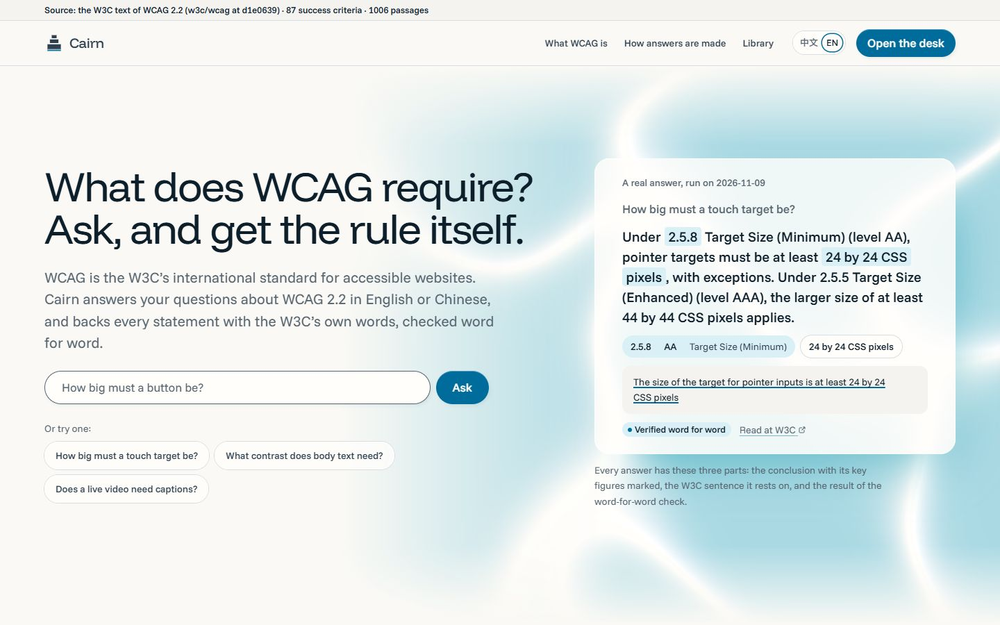
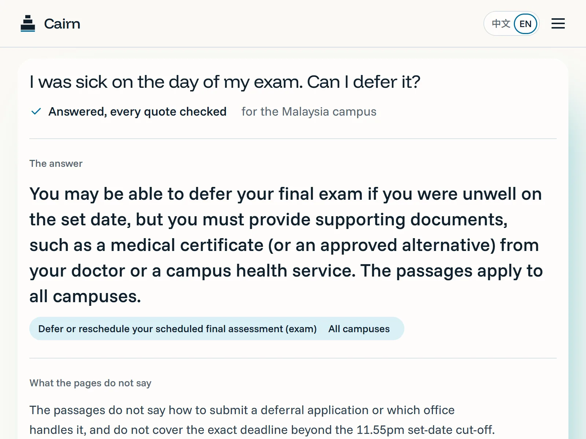
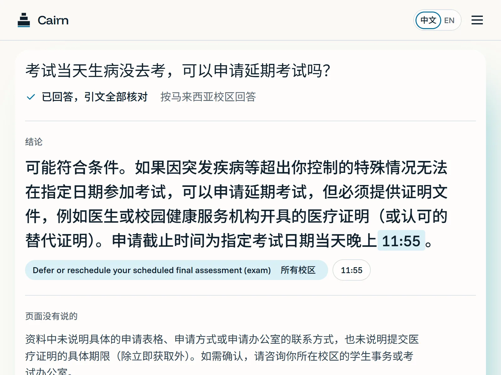
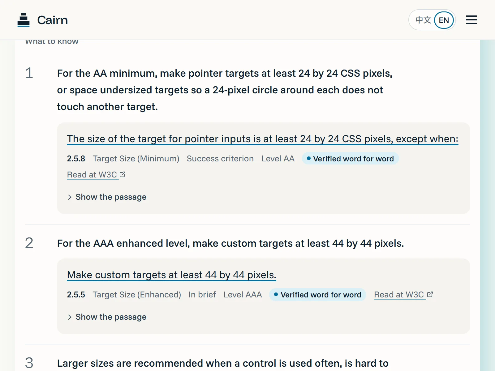
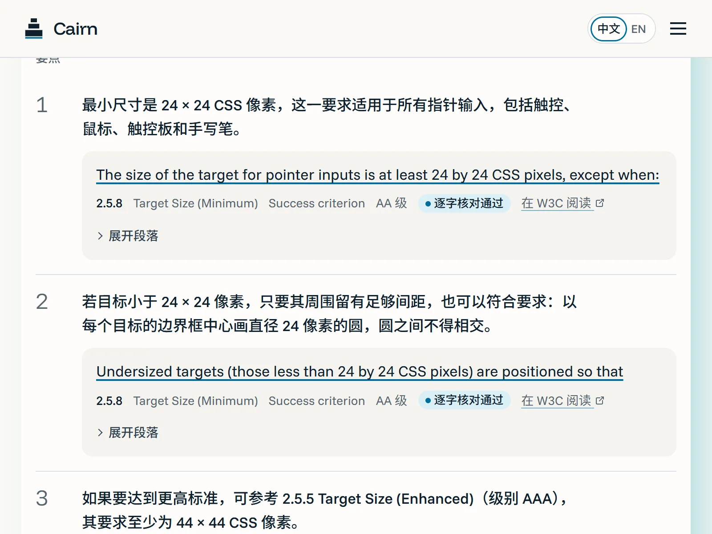
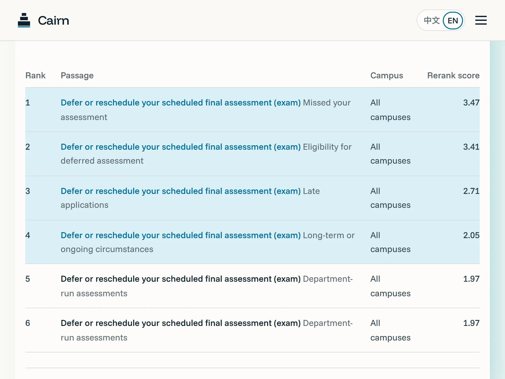
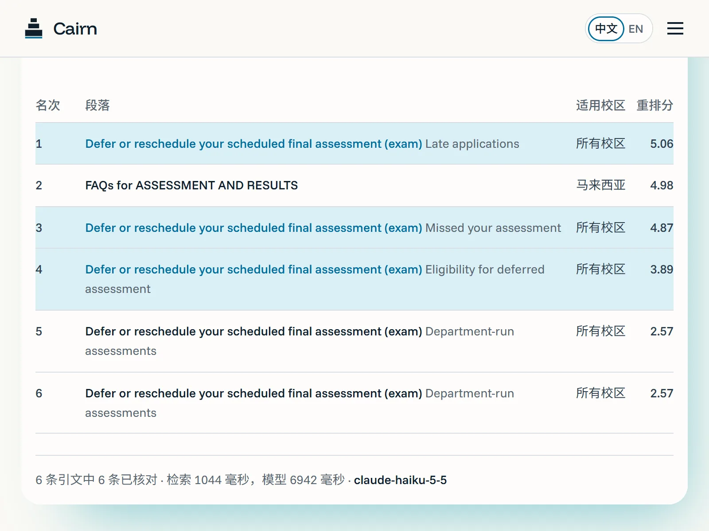
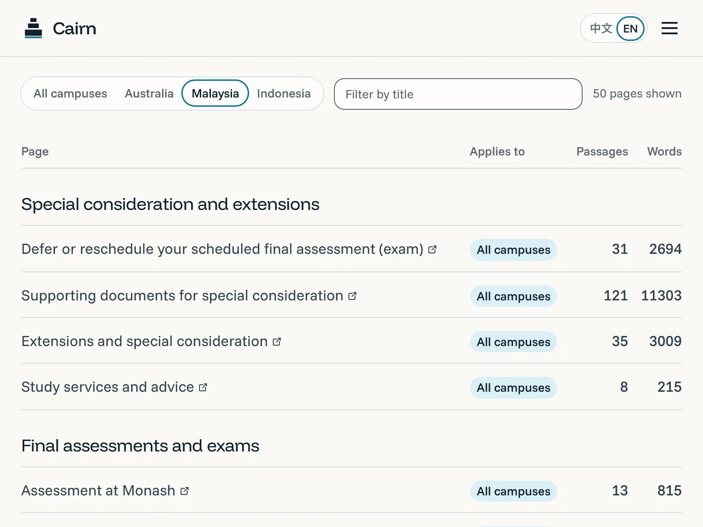
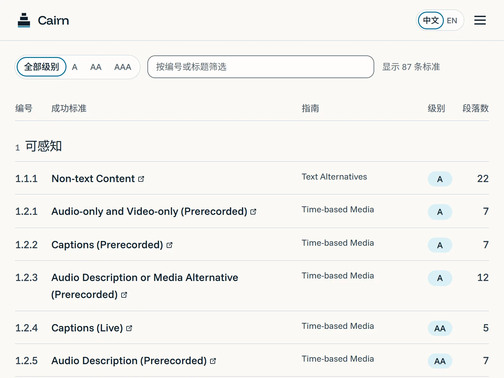

Cairn
A knowledge desk for WCAG 2.2. Ask in English or Chinese; the answer names the success criterion and quotes the W3C text word for word, and the server checks every quote against its source before you see it. WCAG 2.2 的知识问答台。用中文或英文提问，回答点名成功标准并逐字引用 W3C 原文；服务器在你看到之前把每条引文和原文核对。
The demo is static: it shows twelve real answers recorded on 9 November 2026 and cannot answer new questions.演示是静态版：展示 2026 年 11 月 9 日记录的 12 条真实回答，不能回答新问题。

The problem问题
Teams building for the web keep asking the same questions: how big must a button be, what contrast does body text need. The answers are in WCAG 2.2, the W3C’s accessibility standard, but the text is long, formal and English, so people reach for paraphrases, and compliance turns on the wording.做网页的团队总在问同样的问题：按钮至少多大、正文对比度多少。答案在 W3C 的无障碍标准 WCAG 2.2 里，但原文长、正式、是英文，于是大家去找转述，而合规看的正是措辞。
What it does它做什么
- The conclusion in one or two sentences, key figures marked, the criterion as a pill.一两句话结论，关键数字标出，条款编号和级别列成胶囊。
- Every point rests on a W3C quote the server has found word for word; if none is found, no answer.每个要点都落在服务器逐字找到的 W3C 原句上；一句都找不到就不显示回答。
- The route under every answer: the passages retrieved, their scores, why each is there.每条回答下方的路线：检索到的段落、分数和入选原因。
- A library of all 87 criteria, and of every question it could not answer.全部 87 条标准的资料库，以及每个答不上来的问题。








How it works怎么做到的
Retrieval, then generation limited to what was retrieved, then verification in code. The last step is what makes the first two trustworthy.先检索，再只根据检索结果生成，最后用代码核对。最后一步才让前两步可信。
- 1Question提问English or Chinese中文或英文
- 2Embed and retrieve向量检索e5-small; the 20 nearest of 1006 passagese5-small，1006 段里最近的 20 段
- 3Rerank重排序bge-reranker; 6 kept, plus the rule textbge-reranker，保留 6 段，再补条款正文
- 4Write写回答Claude Haiku 5.5; sources limited to an enum of the retrieved idsClaude Haiku 5.5，来源只能是检索到的段落 id
- 5Verify逐字核对every quote found word for word, or the answer is withheld每条引文逐字找到，否则拦截
- 6Answer回答key facts marked, the route shown underneath标出关键数字，路线在下方展开
Grounding as a mechanism把"有依据"做成机制
The model’s structured output has a source_id field whose allowed values are exactly the retrieved passage ids, so it cannot cite a source it was not given. The server then looks for every quote in its passage, and the criteria shown come only from verified quotes.模型结构化输出里的 source_id 字段，允许值就是这次检索到的段落 id，它引不了没给过它的来源。服务器再把每条引文在原段落里查找，显示的条款只来自核对通过的引文。
Chinese questions, English text中文问题，英文原文
A multilingual embedding model puts Chinese questions and English passages in one space, so nothing is translated. Keyword search found the right criterion for 6 of 40 questions; vectors found 28 at first position, and a local reranker lifted that to 32.多语言向量模型把中文问题和英文段落放进同一个空间，不用翻译。关键词检索 40 道题只找对 6 道；向量第一名命中 28 道，本地重排序后提到 32 道。
A bug the trace caught路线面板抓到的一个 bug
Ten criteria have rule text split across passages. The first version kept only the last part, so the touch-target question never saw the sentence that says 24 by 24 CSS pixels. The retrieval trace exposed it; now every part is added.有 10 条标准的正文被切成多段。第一版只补了最后一段，于是触控目标那题根本没看到写着 24×24 CSS 像素的那句。看检索路线才发现；现在每一段都会补进去。
Measured实测
Retrieval over 40 questions written by the team (20 English, 20 Chinese), each labelled with the correct criterion. A method scores when that criterion is in its top 1, 3 or 5 passages.检索评测用团队自拟的 40 道题（中英各 20），每题标出正确条款；条款进入某方法的前 1、3、5 名就算命中。
| Method方法 | Top 1前 1 | Top 3前 3 | Top 5前 5 | MRR@10 |
|---|---|---|---|---|
| Keyword (BM25)关键词（BM25） | 6 / 40 | 10 / 40 | 13 / 40 | 0.21 |
| Vector向量 | 28 / 40 | 38 / 40 | 39 / 40 | 0.82 |
| Hybrid, RRF fusion混合，RRF 融合 | 23 / 40 | 37 / 40 | 39 / 40 | 0.75 |
| Vector + rerank (in use)向量 + 重排序（采用） | 32 / 40 | 39 / 40 | 39 / 40 | 0.88 |
| RRF + rerankRRF + 重排序 | 31 / 40 | 39 / 40 | 39 / 40 | 0.86 |
| Check检查 | Result (9 November 2026)结果（2026 年 11 月 9 日） |
|---|---|
| Smoke test, 7 live questions冒烟测试，7 道实问 | 7 of 7 requests succeeded: four answered with every quote verified, one not covered, one asked for a detail, one injection attempt answered with the real rule.7 次请求全部成功：4 道回答且引文全部核对通过，1 道未覆盖，1 道要求补充细节，1 道注入攻击按真实条款回答。 |
| Cost per question每题成本 | About 0.07 US cents (2936 input, 721 output tokens on average).约 0.07 美分（平均输入 2936、输出 721 个 token）。 |
| Accessibility (axe-core 4.10)无障碍（axe-core 4.10） | 0 violations: five pages, both languages, desktop and phone.0 违规：5 个页面、中英文、电脑和手机。 |
Measurements, not accuracy: retrieval only, team-written questions, no user testing yet.是测量值不是准确率：只测检索，题目团队自拟，还没有用户测试。
What I learned, and the limits学到的，和局限
Learned学到的
- Grounding has to be a mechanism, not a prompt: the enum and the server check did the work."有依据"必须是机制，不是提示词：枚举和服务器核对才是起作用的部分。
- Measure retrieval separately from generation; most wrong answers were retrieval misses.检索和生成分开测；多数错误回答是检索没找对。
- Explain the subject before the product; the cover now teaches what WCAG is first.先讲清对象再讲产品；封面现在先教 WCAG 是什么。
Limits局限
- 87 criteria and their Understanding documents only: no Techniques, no test rules.只有 87 条标准和理解文档，没有技术文档和测试规则。
- An exact quote can still be misapplied. Read the criterion; this is not legal advice.引文一字不差，回答仍可能用错。请读条款本身；这不是法律意见。
- The verifier rejects paraphrase, so some good answers are withheld, by choice.核对器不接受改写，有些好回答会被拦下，这是有意的取舍。
- W3C text quoted unchanged under its licence.W3C 原文依据其许可原样引用。